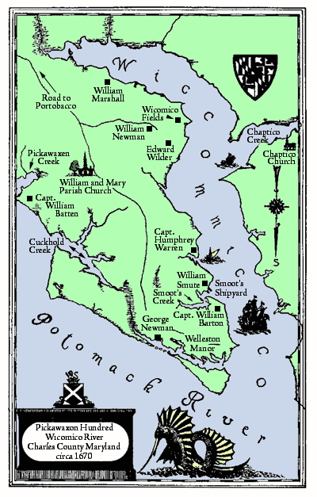

50
THOMAS SMOOT, GENT.2
(1634 - 1668)It is believed that Thomas, son of William Smoot, was born on the other side and brought to Virginia by his parent at an early age. The birth of Thomas' eldest son is proved as 1656, and considering that he were 21 years of age at time of marriage, it would place his birth around 1634. After his settlement in Maryland Thomas Smoot married Jane, the sister of Captain William Batten, of Pickawaxon Hundred, Charles County. The fact that Thomas died intestate has added much to the confusion of the earlier generations and a complete list of his children has not been established. William and Thomas as his sons are proved conclusively, and James is accepted by the fact that he (James) patented a portion of "Smoot's Chance" which had been surveyed for Thomas Smoot who died before the warrant was issued. Edward as a son is merely inferred, inasmuch as he was of that generation and that he cannot be placed satisfactorily elsewhere. It is reasonable to assume that there were daughters born to the union, but none have been proved.
Children of Thomas and Jane (Batten) Smoot
1. James Smoot. q.v.
2. Thomas Smoot married Elizabeth Barton. q.v.
3. William Smoot married twice. q.v.
4. Edward Smoot married Susan ----. q.v.The fact that William, the son of Thomas Smoot, was made an heir in the will of his maternal uncle, Captain William Batten, presents a very interesting court case, showing several connections by blood as well as by marriage. Captain William Batten, born in the year 1618, was one of the early, interesting planters on the Wicomico and probably derived his title from his seafaring adventures. He was apparently a man of some wealth as my be judged by the number of servants he brought to Maryland. And it is sometimes believed that he settled first in Virginia. On January 1, 1652, he demanded from His Lordship 650 acres of land for the transportation of himself, his wife Margarey, his wife's daughter Lydia Ashcomb, his servants George Newman, Richard ----, and Susannah ----, and a servant Robert Joyce whom he had purchased from Robert Brooke and for whom he was to have 50 acres of land.

Map appearing between p50 and p51. Map by Harry Wright Newman. Colorized and new lettering added for clarity by Fred Smoot. Click Here to see a scan of the “untouched” map.
51
Captain Batten was unable to write his name, but it is interesting to note that George Newman whom he transported as his servant and who later married his step-daughter signed his name to all official documents. Batten pursued the occupation of both merchant and planter. As a merchant he extended credit quite freely to his neighbors, almost too freely, for he was frequently entering suits for non-payment of debts. He also brought action in several of the Virginia county courts. He also observed the law with mental reservations and as a consequence had the distinction of being fined for "selling wine and strong drink" without a license.
Captain Batten created a large landed estate for the few years he was a resident of the Province, and is conspicuous in that he was one of the first eight men to receive grants upon the Patapsco River. In 1652 he and Thomas Thomas were granted jointly 1,150 acres of land called "Old Road" in what is now Baltimore County. Before receiving his Patapsco grant, he had obtained numerous other tracts mostly in southern Maryland.
In 1654 he was styled as a "planter of the Patuxent" and was issued a warrant for 240 acres called "Wakefield". Later an addition of 400 acres was surveyed for him. He also obtained an adjacent tract known as "Williamsby". On May 24, 1655, he purchased from Lieut-Col. Samuel Smith "Cedar Point" a 500-acre tract on the Potomac River, a name still retained today. In 1654/5 he added a tract of land called "Batten" to his estate. In 1658 he patented "Indian Spring" of 150 acres in Calvert County and "Batten's Clifts" of 350 acres in Charles County. In February 1662/3, he had 1,000 acres of "Batten's Dale" surveyed for him on the west side of the Wicomico River. Thus before his death, he had acquired a landed estate of something like 4,000 acres. His death occurred a few days before the warrant was issued to him for "Batten's Dale", and Josias Fendall whom he named as one of the overseers in his will and whom his widow later made her attorney appeared to have obtained in some way this last named tract. The other overseers were Robert Henley and his "brother-in-law" William Smute.
His will was probated in 1662. He bequeathed his widow Margarey one- half of his realty. His widow shortly afterwards married John Bowles. Other bequests were to his "daughter" Lydia Newman and her husband George Newman whom he called son and their children--George, William, and Margarey. Legacies were willed to his sister Jane Smute, to his friends Charity Adams and William Love, while the residue of his personal estate was devised to his nephew William Smute.
52
His widow died shortly after her marriage to John Bowles, Gent. The latter by his will proved in Charles County during 1675/6, named no heirs of his body but left a large estate to his nephew James Tyre, with "George Newman Jr., son of George Newman" as the contingent heir in the event that James Tyre died without issues. James Tyre accordingly administered on the estate of his uncle John Bowles and thus became possessed of the estate, a large portion of which formerly belonged to Captain Batten. Tyre died, whereas his widow Rebecca married Robert Yates who became ipso facto the executors of the estate of Captain Batten which at that day remained unsettled. In 1682 William Smoot, the nephew of Captain Batten, and the named heir in his will for the residuary estate was of full age, therefore, he brought suit against Robert Yates for his share of the estate. In 1694 the lawsuit was again before the provincial court and brought forward certain testimonies.
Robert Yates and Rebecca his wife declared that they believed the legacy had been paid to William Smoot. Lydia Manners testified that she had heard her husband George Manners say that Thomas Smoot received six chairs of the estate.
James Witcherly declared that James Bowles sent his man to Mrs. Rowland and requested her to meet him at the home of Captain Fendall. Upon her return, he heard Mrs. Rowland, mother to William Smoot, say "they had made an end of Battin's estate".
Mary Brown testified that she heard Robert Rowland "who married the said William Smoot's mother" say that when William Smoot came of age he had 10,000 pounds of tobacco to be paid from his uncle's estate. Eleanor Bean testified that she heard that Thomas Smoot, the father of William, had sold his part of the estate to Captain Fendall. Humphrey Warren certified that he had heard it said that Captain Fendall "cheated" Smoot.
Returning to Thomas Smoot who was deceased at the time of his son's law suit, we find him on October 1, 1662, receiving from his "brother-in- law" William Barton Jr. land which the latter held in trust for his ward William Hungerford, son of William deceased. In 1665 Thomas Smoot transferred the trustship to his father William Smoot Sr. with the stipulation for the return of the said trust in the event of the father's death during the minority of the orphan.
On August 4, 1665, "Smoot's Choice" was surveyed for him containing 250 acres. At a later rent roll 150 acres were possessed by Thomas Morris and 100 acres by William Hungerford. About this time or
53
before Thomas Smoot acquired from Thomas Gerard "Wicomico Fields" a tract of 500 acres lying on the west bank of the Wicomico River originally granted by patent to Thomas Hatton. This tract by resurveys and later additions developed into a much larger estate and became the traditional home of one branch of the Smoot family until the nineteenth century.
Thomas Smoot died intestate in Charles County perhaps during the early part of 1668. The court on February 2, of that year, granted letters of administration to Jane Smoot, the relict. Richard Smoot and William Smoot were her bondsmen. His estate was appraised at 42,075 pounds of tobacco by Humphrey Warren and Robert Henley. His widow shortly afterwards married Robert Rowland who rendered an account to the court on April 8, 1669.
JAMES SMOOT3
The first mention in public records of James Smoot, son of Thomas and Jane (Batten) Smoot, was in November 1681, when he received 230 pounds of tobacco for the performance of some public act, believed to be for service in one of the early Indian wars. Inasmuch as he was of sufficient age to bear arms in 1681, he was apparently born prior to 1665. On April 15, 1687, he patented 160 acres of "Smoot's Chance", lying in Charles County. On February 21, 1689, at Port Tobacco he contracted a debt of 800 pounds of tobacco with Edward Ford; in 1693 he was named as an heir in the will of James Lambert. He, however, died or left the county shortly afterwards, for about 1694 Edward Ford appointed William Stone his attorney to collect the debt of James Smoot, at which time the latter is referred to as late of Charles County. No further record of him exists or neither a marriage nor children have been proved. His land "Smoot's Chance" was later held by John Wilder and John Baptist Boarman.
Back Next Search Index
"The Smoots of Maryland and Virginia" by Harry Wright Newman, originally published privately in Washington D.C. in 1936. This edition edited and published by Frederick K. Smoot and the Smoot Family Association, copyright 2001.
You are Our Reader Since 1 February 2001
Last updated
Please Email Additions and/or Corrections to Webmaster
{kind=link}